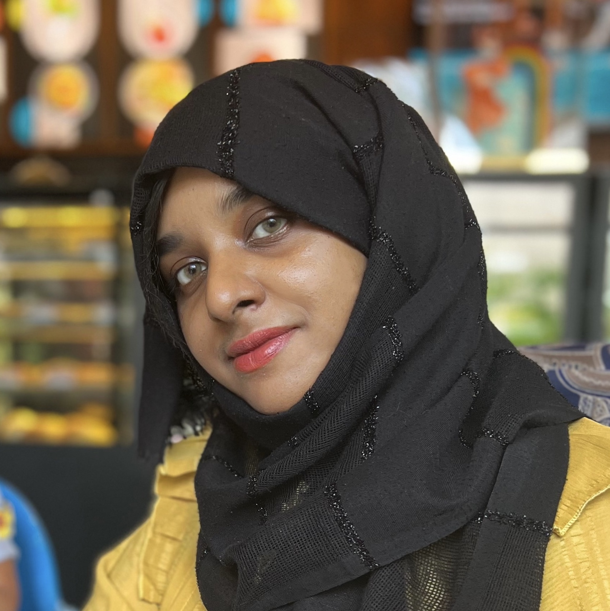

Tasneem Aboobacker

Summary
Dedicated and results-driven professional with a proven track record in skill development, content writing, and a strong passion for web development. Seeking a challenging role that allows me to leverage my diverse skill set and contribute to innovative projects.
Education
- Masters in English, IGNOU (2020-2021)
- Bachelors in Commerce, University of Calicut (2013-2015)
Work Experience
Skills
- Effective verbal and written communication
- Content strategy and editing
- Responsive web design principles
Awards and certifications
- Diploma in Graphic designing (2023)
- Complete web dev bootcamp udemy certification (2023)
Other
Hobbies
Contact me